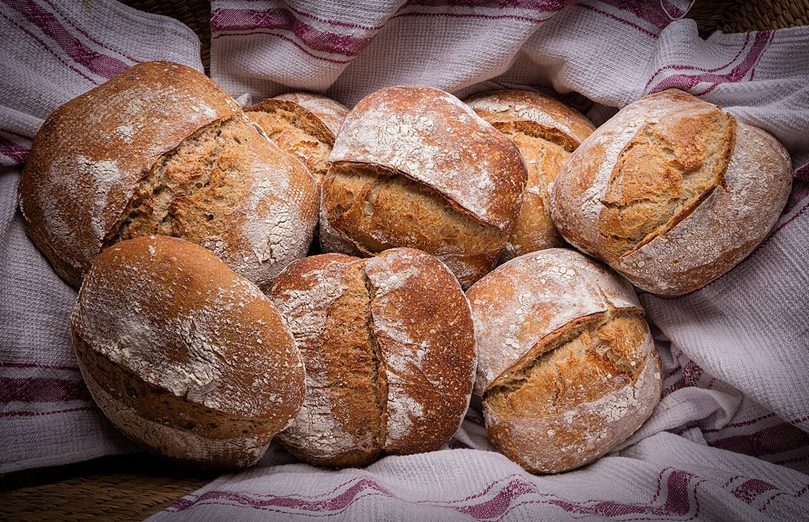

制作側の連想
パンの「数えかた」から考えたこと
店名の由来は分かりません。制作側は「パンを数えるとき、塊は一斤、細長いものは一本、小さなものは一個……と数え方が変わる」ことからこのページを作りました。五つのページを五つの数え方に見立てた「数えかたの帖」です。お店の理念・由来とは無関係な、制作側の連想です。
数えかたの帖
五つの数えかた、五つのページ。
写真はお店や豊中市のものではありません。数え方のイメージで選んだ、国外・撮影地不明のフリー素材です。お店で扱う商品を示すものではありません。
- 一斤いっきん塊のパンを数えるときの言い方。ここはホーム。

撮影地不明のイメージ - 一個いっこ小さなパンを数える言い方。店のこと。

撮影地不明のイメージ - 一本いっぽん細長いパンを数える言い方。メニュー(準備中)。

撮影地不明のイメージ - 一袋ひとふくろ袋に入れたものを数える言い方。口コミ(イメージ例)。

国外のイメージ(スウェーデン) - 一枚いちまい薄く切ったものを数える言い方。ここでは地図の一枚。

国外のイメージ(イタリア)
ご案内
お店のこと(確認できたものだけ)
| 所在地 | 〒561-0853 大阪府豊中市服部南町3丁目3-7 |
|---|---|
| 電話 | 06-6398-7751 |
| 営業時間 | 準備中 |
| 定休日 | 準備中 |
| ご予約 | 準備中 |
| 駐車場 | 準備中 |
| SNS | Instagram @hattori.tenjin.bakery |